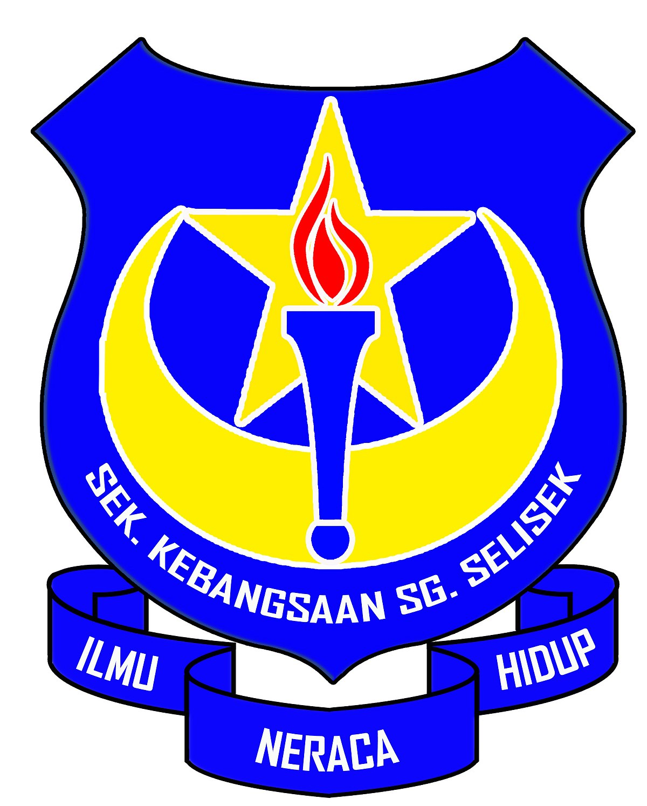
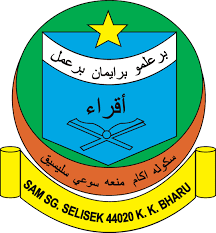
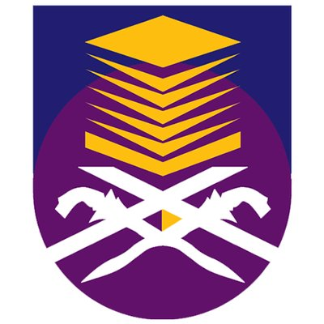

PRIMARY SCHOOL
Sekolah Kebangsaan Sungai Selisek
| Storytelling Competition (district level) |
| Public Speaking (Arab) |

SECONDARY SCHOOL
Sekolah Agama Menengah Sungai Selisek
SMA - JAID JIDDAN
| Public Speaking (Bahasa Melayu) |
| Parliamentary Debate (Best Debator Award) |
| Forum (State Level) |

UNIVERSITY
Diploma
(Information Management)
Degree
(Information Science (Hons.) Library Management
| Dean's Award |
| College Sport-day |
| Martial Art (silat) Open Tournament |
| Treasurer of Islamic Rhythm and Management club |
| Secretary of Martial Art Club (silat) |
BACK TO TOP